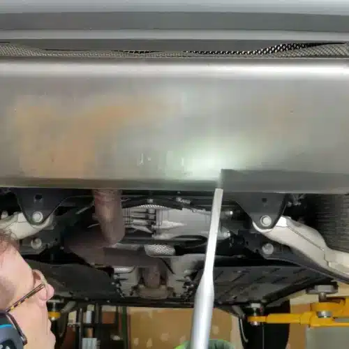

01
UNDERCARRIAGE & CHASSIS
언더바디 · 섀시

하부의 오일과 도로 오염물을
부품을 떼어내지 않고 제거합니다.
차량 하부는 오일과 그리스, 도로 오염물, 타르와 방청 왁스가 가장 두껍게 쌓이는 곳이고, 배기계와 서스펜션, 배선과 배관이 얽혀 있어 손과 브러시가 닿지 않는 곳이 많습니다. 고압 세척은 수분을 남기고, 용제 세척은 시간이 오래 걸립니다.
드라이아이스 세척은 리프트 위에서 하부 전체를 분해하지 않고 세척하는 데 활용되며, 노즐을 바꾸어 프레임 안쪽과 부품 사이 틈에 접근합니다. Cold Jet 자료에 따르면 고급차 디테일링과 딜러의 출고 전 정비에서 언더바디 세척이 대표적인 작업으로 소개됩니다. 하부 작업에는 차량 리프트가 사실상 필수입니다.
대표 대상
- 프레임 · 플로어 팬
- 배기계 · 히트 실드
- 서브프레임 · 크로스멤버
- 하부 배선 · 배관 주변
주요 오염물
오일 · 그리스 · 도로 오염물 · 타르 · 방청 왁스